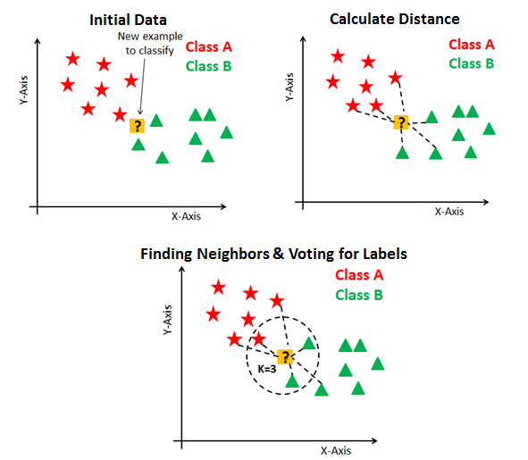

O Weka
Made by - Lucas F.

O Weka tem como objectivo agregar algoritmos provenientes de diferentes abordagens/paradigmas na sub-área da inteligência artificial dedicada ao estudo de aprendizagem de máquina
Essa sub-área pretende desenvolver algoritmos e técnicas que permitam a um computador "aprender" (no sentido de obter novo conhecimento) quer indutiva quer dedutivamente.
O Weka procede à análise computacional e estatística dos dados fornecidos recorrendo a técnicas de mineração de dados tentando, indutivamente, a partir dos padrões encontrados gerar hipóteses para soluções e no extremos inclusive teorias sobre os dados em questão.
Ele pode ser facilmente instalado clicando aqui
Como criar um arquivo ARFF
Primeiramente, para criar um arquivo ARFF, abra um editor de texto limpo, geralmente já vem instalado no seu sistema operacional, como o bloco de notas do Windows

Use a tag @Relation para definir o nome do arquivo

Para definir o nome do atributo use a tag @Attribute

Para criar elementos com valores dos atributos pré definidos utilize a tag @Data na ordem de criação dos atributos

Clique em salvar como e salve o arquivo como .ARFF, sendo assim, o Weka poderá interpretar seu arquivo
Como utilizar o WEKA para abrir um dado ARFF
Ao abrir o programa, essa será a interface
Clique em Explorer para abrir essa interface
Clique em Open file... e abra seu arquivo .ARFF
Aqui é os dados do arquivo .ARFF
Análise KNN
Análise de dados
Cada vez mais a quantidade de dados com padrões vem crescendo no mundo, com isso vem a necessidade de sistemas e ferrametas que consigam interpretar, separar e utilizar esses dados, por isso universidades e programadores trabalham dia e noite para criarem essas ferramentas. O Knn é um algoritimo que surgiu com esse objetivo de análisar os dados e fazer previsões com eles, mas o ponto que mais chama a atenção dele é sua simplicidade na hora de utilizar.
Casos para utilizar o KNN
KNN para regressão
Quando o KNN é usado para problemas de regressão, a previsão é baseada na média ou na mediana das instâncias mais semelhantes.
KNN para classificação
Ele pode também ser utilizado para classificar algo, como uma operadora classifica seus clientes, os que não usam seus serviços, os que usam de vez em quando e os que utilizam frequentemente, para separar as ofertas e promoções.
Como utilizar o KNN
Para classificação
O caso mais comum para utilização do KNN, é para classificações, o método mais comum para medir a distância entre dois pontos é a distância Euclidiana
Ele calcula a distâncias entre dois vetores que no caso acima foram representados como sendo linhas de uma matriz que é sua representação mais comum em aplicações reais.
Para regressão
Com algumas pequenas modificações é possível aplicar o KNN para problemas de regressões. Assim como antes podemos utilizar a distância euclidiana para calcular a distância entre as instâncias porem a diferença reside na forma em que será calculado o valor para ser associar a instância que está sendo testada.
Ao invés de usarmos aquela classe que aparece com mais frequência nos K vizinhos mais próximos, pegaremos uma média dos valores dessas instâncias.
Agora suponha o conjunto de vetores pertecendo ao conjunto dos K vizinhos mais próximos:

Como sabemos, cada vetor desse conjuntos esta associado a um número real, pois o KNN usa o próprio conjunto de treino como parte do algoritmo, logo usaremos o vetor esses valores, então podemos a cada vetor do conjunto K a uma valor real que representa seu valor. Logo teremos o seguinte vetor denominado V.

Como avaliar os resultados
Com os dados e as previsões que o KNN te forneceu, você pode utilizar de diversas formas para seu negócio ou seu projeto, mas com tudo, todos os dados devem ser analisados e bem planejados para que nenhum erro futuro ocorra.